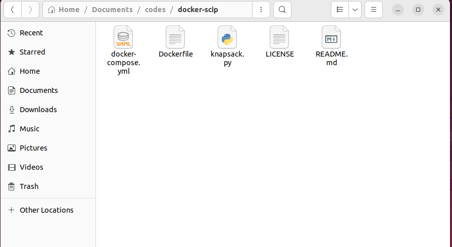
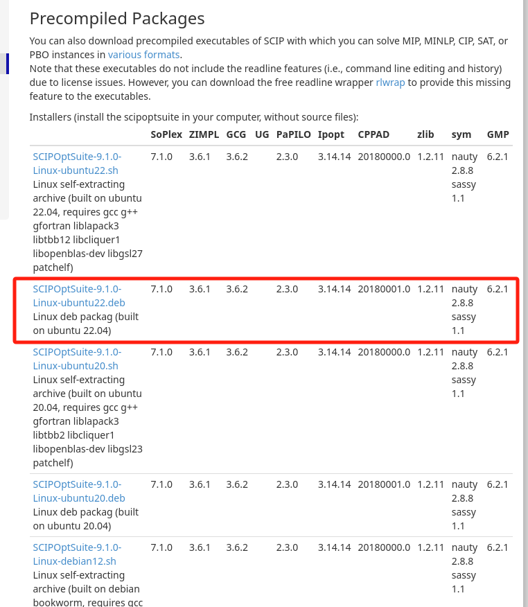

Docker 安装SCIP, Python及PySCIPOpt#
Reference#
https://viktorsapozhok.github.io/docker-scip-pyscipopt/
网上有个大神已经写好dockerfile，我们直接拿来用，这里使用宿主机是Ubuntu22.04虚拟机
0 配置git并连接到github#
安装git
sudo apt-get update sudo apt-get install git
设置用户名和邮箱地址
git config --global user.name "YOUR NAME" //user.name与"YOUR NAME"之间一定要有空格！！！下同 git config --global user.email "YOUR EMAIL ADDRESS"
创建SSH key
ssh-keygen -t rsa -C "yourmail@example.com"
复制
.ssh/id_rsa.pub文件的内容登陆github网站，在“settings”中找到“SSH and GPG keys”选项，点击“new SSH key ”按钮，粘贴ip_rsa.pub中的内容：
1 克隆代码仓库#
ubuntu下克隆仓库
git clone git@github.com:viktorsapozhok/docker-scip.git

2 下载SCIP#
ubuntu下下载SCIP的
deb文件，并放到docker-scip文件夹里
3 解读docker-compose.yml#
version: '3.7'
services:
scip:
image: scip:v0.1
container_name: scip
# user: user
build:
context: .
dockerfile: Dockerfile
这个 docker-compose.yml 文件用于定义和管理一个 Docker 服务，具体是一个名为 scip 的服务。以下是对各部分的详细解释：
版本：
version: '3.7'
指定使用的 Docker Compose 文件的版本，这里使用的是 3.7 版本。
服务：
services: scip:
定义服务的部分，这里只有一个服务，名为
scip。镜像：
image: scip:v0.1
指定要使用的 Docker 镜像，名称为
scip，标签为v0.1。这个镜像应该是根据 Dockerfile 构建的。容器名称：
container_name: scip
指定容器的名称为
scip，这样在 Docker 中可以通过这个名称来引用和管理该容器。构建配置：
build: context: . dockerfile: Dockerfile
context: .：指定构建上下文为当前目录（.），这意味着 Docker 在构建镜像时会使用当前目录中的所有文件。dockerfile: Dockerfile：指定要使用的 Dockerfile 文件名。如果 Dockerfile 的名称是默认的Dockerfile，这一行可以省略。
总的来说，这个 docker-compose.yml 文件定义了一个名为 scip 的服务，它将使用指定的 Dockerfile 构建镜像并启动一个容器。通过 Docker Compose，可以方便地管理和运行这个服务。
4 解读Dockerfile#
FROM python:3.9-slim
# install compilers and scip deps
RUN apt-get update \
&& DEBIAN_FRONTEND=noninteractive apt-get install -y --no-install-recommends \
build-essential \
libgfortran4 \
libcliquer1 \
libopenblas-dev \
libgsl23 \
libtbb2 \
wget \
&& wget -O libboost.deb "http://archive.ubuntu.com/ubuntu/pool/main/b/boost1.65.1/libboost-program-options1.65.1_1.65.1+dfsg-0ubuntu5_amd64.deb" \
&& dpkg -i libboost.deb \
&& rm libboost.deb
# add scip installer inside container
ADD SCIPOptSuite-7.0.2-Linux-ubuntu.deb /
# install scip and remove installer
RUN dpkg -i SCIPOptSuite-7.0.2-Linux-ubuntu.deb \
&& rm SCIPOptSuite-7.0.2-Linux-ubuntu.deb
# create user
RUN groupadd --gid 1000 user \
&& useradd --uid 1000 --gid 1000 --create-home --shell /bin/bash user \
&& chown -R "1000:1000" /home/user
# move script inside the container
RUN mkdir /home/user/scripts
ADD knapsack.py /home/user/scripts
USER user
# install scip python api
RUN pip install pyscipopt
WORKDIR /home/user
CMD tail -f /dev/null
这个 Dockerfile 的主要目的是创建一个包含 Python 3.9 和 SCIP（一个用于解决组合优化问题的开源软件）环境的 Docker 镜像。以下是对每个部分的详细解读：
基础镜像：
FROM python:3.9-slim
选择了一个轻量级的 Python 3.9 镜像作为基础。
安装编译器和 SCIP 依赖：
RUN apt-get update \ && DEBIAN_FRONTEND=noninteractive apt-get install -y --no-install-recommends \ build-essential \ libgfortran4 \ libcliquer1 \ libopenblas-dev \ libgsl23 \ libtbb2 \ wget \ && wget -O libboost.deb "http://archive.ubuntu.com/ubuntu/pool/main/b/boost1.65.1/libboost-program-options1.65.1_1.65.1+dfsg-0ubuntu5_amd64.deb" \ && dpkg -i libboost.deb \ && rm libboost.deb
更新包管理器的索引。
安装一系列必要的库和工具，包括编译工具和科学计算库。
下载并安装 Boost 库的特定版本。
添加 SCIP 安装包：
ADD SCIPOptSuite-7.0.2-Linux-ubuntu.deb /
将 SCIP 的安装包添加到容器的根目录。
安装 SCIP 并删除安装包：
RUN dpkg -i SCIPOptSuite-7.0.2-Linux-ubuntu.deb \ && rm SCIPOptSuite-7.0.2-Linux-ubuntu.deb
安装 SCIP，并在安装后删除安装包以节省空间。
创建用户：
RUN groupadd --gid 1000 user \ && useradd --uid 1000 --gid 1000 --create-home --shell /bin/bash user \ && chown -R "1000:1000" /home/user
创建一个新的用户组和用户，UID 和 GID 都为 1000。
创建用户的主目录并设置权限。
移动python脚本到容器内：
RUN mkdir /home/user/scripts ADD knapsack.py /home/user/scripts
创建一个目录用于存放脚本。
将
knapsack.py脚本添加到该目录。
切换到新用户：
USER user
切换到刚创建的用户，以便后续操作在非特权模式下运行。
安装 SCIP Python API：
RUN pip install pyscipopt
使用 pip 安装 SCIP 的 Python 接口库
pyscipopt。设置工作目录：
WORKDIR /home/user
设置容器的工作目录为用户的主目录。
保持容器运行：
CMD tail -f /dev/null
使容器保持运行状态，防止容器在启动后立即退出。
总的来说，这个 Dockerfile 创建了一个适合运行 SCIP 相关 Python 脚本的环境，安装了必要的依赖并配置了用户权限。
5 设置代理#
docker容器与宿主机的网络连接默认是桥接模式
docker pull 设置代理
修改conf文件
sudo mkdir -p /etc/systemd/system/docker.service.d sudo touch /etc/systemd/system/docker.service.d/proxy.conf su gedit /etc/systemd/system/docker.service.d/proxy.conf
proxy.conf添加以下内容：
[Service] Environment="HTTP_PROXY=http://10.242.37.158:33210/" Environment="HTTPS_PROXY=http://10.242.37.158:33210/" Environment="NO_PROXY=localhost,127.0.0.1,10.242.37.158"
10.242.37.158是Ubuntu虚拟机与外部机无线网连接的ipv4地址，可以在外部机查询，如果外部机是win11，则可以通过cmd的ipconfig命令查询保存退出
重新加载服务
systemctl daemon-reload重新启动Docker
systemctl restart docker
测试
su docker pull docker.io/library/python:3.11-slim
如果能拉取成功则说明代理配置成功
docker build 设置代理
修改文件
sudo gedit /etc/default/docker
修改proxy和DNS：
# Use DOCKER_OPTS to modify the daemon startup options. DOCKER_OPTS="--dns 114.114.114.114" # If you need Docker to use an HTTP proxy, it can also be specified here. export http_proxy="https://10.242.37.158:33210"
`114.114.114.114`是虚拟机在桥接模式下的DNS，可以参考[1 Linux 安装及配置](../../linux_c_cpp/1_linux_config/README.md) 2. 测试 在ubuntu中新建一个文件夹，然后在里面新建一个dockerfile，内容如下： ```bash FROM ubuntu:22.04 RUN apt-get update && apt-get install -y \ build-essential \ && rm -rf /var/lib/apt/lists/* ``` 运行 ```bash docker build -t ubuntu22.04 . ``` 如果镜像可以构建成功，则说明代理设置成功docker container 设置代理
修改文件
touch ~/.docker/config.json vim ~/.docker/config.json
设置内容：
{ "proxies": { "default": { "httpProxy": "http://10.242.37.158:33210", "httpsProxy": "http://10.242.37.158:33210", "noProxy": "localhost,127.0.0.1,10.242.37.158" } } }
6 修改文件目录结构与Dockerfile#
为了方便docker build，我重组了一下文件目录结构如下
|+---docker-scip | | Dockerfile | | SCIPOptSuite-9.1.0-Linux-ubuntu22.deb | +---src | | knapsack.py
修改Dockerfile
FROM ubuntu:22.04 AS builder ENV DEBIAN_FRONTEND=noninteractive ENV TZ=Asia/Shanghai COPY SCIPOptSuite-9.1.0-Linux-ubuntu22.deb ./ # install compilers and scip deps RUN ln -snf /usr/share/zoneinfo/$TZ /etc/localtime && echo $TZ > /etc/timezone RUN apt-get update &&\ apt-get install -y build-essential &&\ rm -rf /var/lib/apt/lists/* RUN apt-get install -y SCIPOptSuite-9.1.0-Linux-ubuntu22.deb &&\ rm SCIPOptSuite-9.1.0-Linux-ubuntu22.deb FROM python:3.11-slim AS prod # install scip python api RUN pip install pyscipopt # create user RUN groupadd --gid 1000 user \ && useradd --uid 1000 --gid 1000 --create-home --shell /bin/bash user \ && chown -R "1000:1000" /home/user # move script inside the container RUN mkdir /home/user/src WORKDIR /home/user/src
7 构建镜像#
在文件夹
docker-scip打开终端su docker build -t scip9.1.0_python3.11:1 .
8 生成容器并挂载文件夹#
docker run --name scip_python_container -v /home/zp/Documents/scip_codes/docker-scip/src:/home/user/src -it scip9.1.0_python3.11:1 /bin/bash
exit
9 运行python文件#
docker start scip_python_container
docker exec -it scip_python_container /bin/bash
python3 knapsack.py
10 退出容器并暂停容器#
exit
docker stop scip_python_container
镜像构建成功后，以上8，9，10步在不同操作系统均适用. （第8步的挂载文件夹路径需要修改）